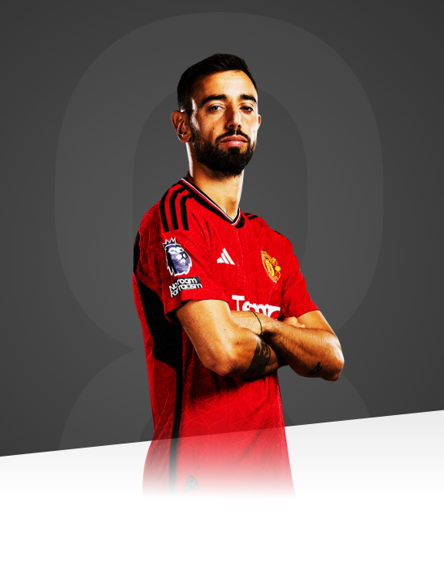

To play for United feels incredible. I can promise the fans I will give everything to help bring us success.

AGE
29
APPEARANCES
195
CLEAN SHEETS
66
BIOGRAPHY
Bruno Fernandes took an unusual path to the top when compared to other Portuguese talents who have served Manchester United.
While the likes of Cristiano Ronaldo and Nani made their names in Portugal, Fernandes spent the first five years of his career in Italy.
A youth product at Boavista, the midfielder signed for Serie B club in Novara in August 2012, at the age of 17. Initially suffering from homesickness, he eventually grew into his new environment, teaching himself Italian and helping the Blues to fifth position, before joining Udinese in Italy's top tier.
Three seasons in Udine yielded 11 goals in 95 appearances, convincing Sampdoria to clinch his signature in the summer of 2016. International recognition as part of Portugal's Olympic squad followed, before Bruno captained the Under-21s at the UEFA European Championships in 2017.
After shining in a solitary season with Sampdoria, Bruno moved back home, signing for Sporting Clube de Portugal. Although he had mostly played in Italy as a deep midfielder, Fernandes now took on the role of playmaker at the Estadio Jose Alvalade, contributing 16 goals and 20 assists in his first Primeira Liga campaign.
That record, coupled with a Portuguese League Cup win, helped Fernandes gain his first senior international cap, and he was later selected for Fernando Santos' 2018 World Cup squad in Russia
Named Primeira Liga Player of the Year in July 2018, Bruno picked up where he left off the following season, hitting an incredible 20 league goals from midfield and assisting a further 13. The Lions claimed the Portuguese Cup and League Cup double and the midfielder, who was named club captain after Nani's departure, once again picked up Portugal's premier individual accolade.
He was part of the national team squad which won the inaugural UEFA Nations League in June 2019, only Portugal's second major trophy.
After a productive first half of 2019/20, during which he helped Sporting to the last 32 of the UEFA Europa League, he completed his move to Old Trafford on 30 January 2020. He made his Reds debut two days later, during the 0-0 draw with Wolverhampton Wanderers.
It wasn't long before the Portuguese's impact was felt. He delivered his first assist in just his second game - a 2-0 win at Chelsea - and then scored his first goal (from the penalty spot) on his third start. And that was just a taste of what was to come: Bruno scored 12 goals and provided eight assists before the end of the season, and was arguably the driving force behind United's impressive run to a third-place finish in the Premier League.
He was named the Sir Matt Busby Player of the Year for the season, despite playing just half of the campaign.
Bruno began 2020/21 in fine style, too, scoring a dramatic 100th-minute winner from the spot at Brighton. Fernandes was United's - and maybe even the Premier League's - standout performer during the first half of the campaign, claiming the club's and league's Player of the Month awards for November and December.
In helping the Reds to a second-placed finish, and the Europa League final, Bruno scored 28 goals, overtaking Frank Lampard's record for a midfielder in a single season in the Premier League era. He picked up his second Sir Matt Busby Player of the Year trophy, in front of returning fans at Old Trafford, and also won the club's Goal of the Season prize for a spectacular effort against Everton.
In April 2022, Bruno signed a new long-term contract with club, rewarding his work since his arrival from Sporting. The deal is due to run until 2026, with the option of a further year.
He lifted his first trophy at United in February 2023, as the Reds beat Newcastle United 2-0 in the Carabao Cup final. He also scored in the Emirates FA Cup final defeat to Manchester City at Wembley, as he finished on 14 goals and 15 assists in his 59 club games across a mammoth campaign.